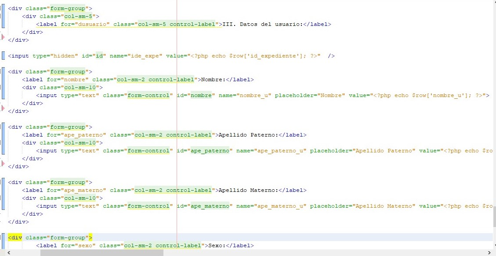

Desarrrollo
En el CRIE (Centro de Recursos e Información para la Integración Educativa), se ofrece orientación y apoyo a padres de familia y maestros para contribuir a la eliminación de barreras para el aprendizaje en el ámbito educativo, social y laboral. Por lo antes mencionado, maneja diversos tipos de expedientes físicos y documentos digitales como son archivos, fotografías y demás. Atiende a maestros y padres de familia en el Centro de Integración, así como en Instituciones educativas. Por lo que se llevó a cabo el desarrollo de un sistema web para el control de sus expedientes.
Resultados:
- Tener un mejor control de sus expedientes.
- El acceso a sus expedientes es mucho más rápido y eficiente.
- El llenado de las solicitudes se realiza de una manera mucho más rápida y eficiente.
Marco de Trabajo
Se muestran a continuación algunas de las tecnologías usadas en el desarrollo del proyecto.
Tecnologías Usadas:
- PHP:
Se utilizó PHP como lenguaje de servidor, para atender las consultas de parte del cliente.
- MySQL:
Como gestor de Base de datos.
- HTML:
Como principal tecnología para la maquetación de las paginas.
- Boostrap:
Para obtener un diseño responsive con las clases que este framework ofrece.
- Javascript:
Para dar mayor funcionalidad al sistema
- Otras:
Se utilizaron otras tecnologías como son JQuery, Ajax, y librerías como: PhpMailer, fpdf etc.
Ejemplo de Código
En la siguiente imagen se puede observar un fragmento de código, en este se observa etiquetas html en conjunto con las clases de Boostrap, también se observa la incrustación de código php, en este caso para mostrar los datos del usuario que ya fueron guardados en la base de datos, mediante un script se recuperan y se muestran, así el personal que maneja el sistema podrá actualizar los datos en caso de ser necesario.
Imagenes de muestra
En el siguiente slider se muestran algunas imágenes acerca del funcionamiento de la aplicación.
Anterior Siguiente
Login
Página de inicio para el personal.Nueva Solicitud
Formulario de registro de una nueva solicitud.
Listado de Solicitudes
Listado de las solicitudes ingresadas.
Modificar Solicitud
Formulario para modificar datos de la solicitud.
Solicitud en Pdf
Se muestra la solicitud con los datos en pdf.
Tipo de solicitud
Ventana con las 3 opciones de solicitud.